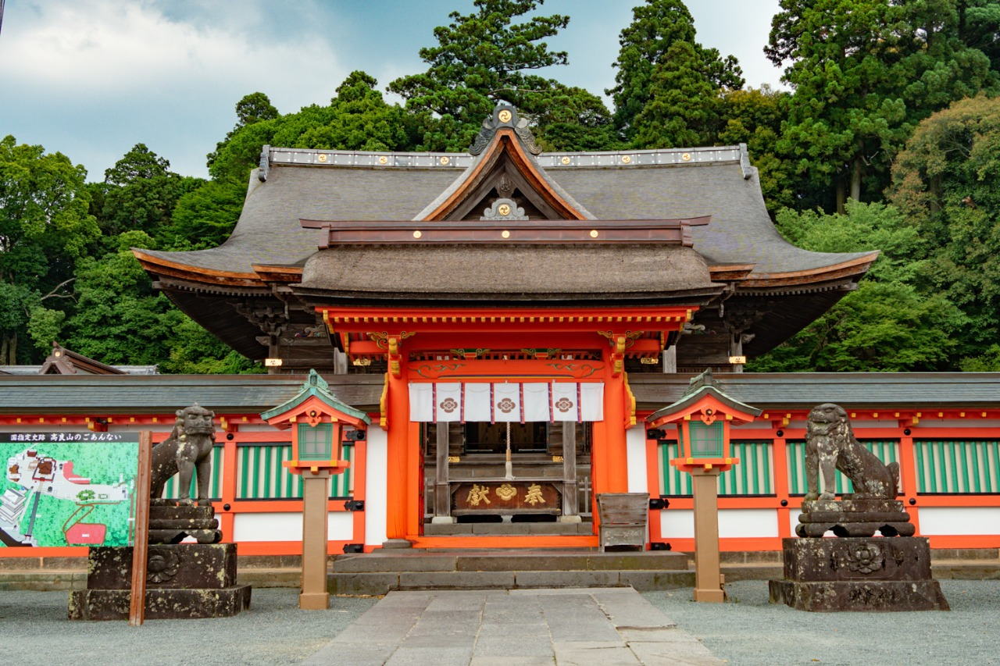

高良大社（Koura-taisya）

住所
〒839-0851
福岡県久留米市御井町一番地
旧国名
筑前国一宮
御祭神
高良玉垂命（たからたまだれのみこと）・八幡大神・住吉大神
高良大社について
高良大社は、福岡県久留米市の東部、高良山に祀られています。仁徳天皇55年（367）または78年（390）の鎮座、履中天皇（りちゅうてんのう）元年（400）創建と伝えられています。
『延喜式神名帳（えんぎしきじんみょうちょう）』には「高良玉垂命神社（たからたまだれのみことのかむやしろ）」と記載され、名神大社に列しています。
国指定重要文化財の社殿は万治3年（1660）の総こけら葺の権現造りで、和様と天竺様の折衷という造りです。また、境内には国の天然記念物孟宗金明竹（もうそうきんめいちく）の竹林があります。
御祭神である高良玉垂命は大和の王権が及ぶ前からこの地に祀られていた古来よりの神であると考えられています。
1600年以上の歴史を持ち、朝野の崇敬を集めています。
お祭り
『川渡祭』・・6月1日に行われる厄払いの行事です。赤い肌着に肩掛け姿の厄年を中心とした人が無病息災を願い、茅の輪をくぐります。別名「へこかきまつり」といいます。
『例大祭』・・「高良おくんち」とも呼ばれる秋祭りです。10月9日～11日の3日間盛大に行われます。